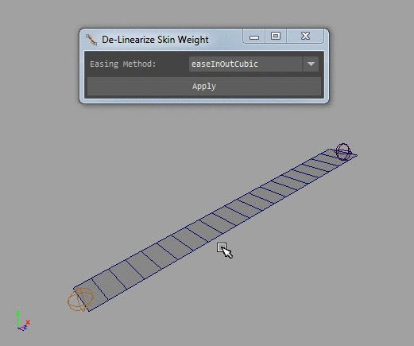

skinning.tools.delinear_weights package¶
De-linearize skin weights.

Installation¶
- Extract the content of the .rar file anywhere on disk.
- Drag the skinning-tools.mel file in Maya to permanently install the script.
Note¶
Delinear weights applies an easing algorithm to the skin weights. This tool is best used if skin weights have been copied from a low polygon source, when this is done sometimes it is very obvious that the weights are linearly divided between the vertices of the low polygon source. This tool will tween those weights.